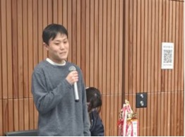
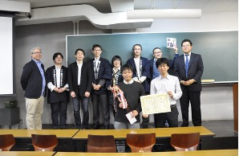
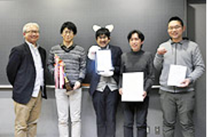

ASTER Session
Title
How should software tests be designed in practice? - Introducing case studies from the Test Design Competition by ASTER
Abstract
In this session, after explaining about ASTER and the Test Design Competition, two case studies from the Test Design Competition will be presented, showcasing how tests are designed based on the same test basis. Participants will observe that despite having the same test basis, the approaches and results vary. These case studies will be presented by previous final match winners of the competition. One case study was presented as a paper titled “Test Conglomeration - Proposal for Test Design Notation like Class Diagram” at the InSTA2017 workshop, part of ICST2017, the 10th IEEE International Conference on Software Testing, Verification and Validation. Additionally, last year's final match winners will share their experiences of using AI in test design.
Time Table
- Introduction to ASTER: Kenji Onishi
- Introduction to the Test Design Competition: Akiharu Sato
- Introduction to the SUT (System Under Test) for the case study: Akiharu Sato
- Case Study Presentation 1 by Previous Winners: Noriyuki Mizuno
- Case Study Presentation 2 by Previous Winners: Tomohiro Odan
- Experiences of the Latest Winners (including AI utilization): Takafumi Yanagawa
- Q&A Session
About the Test Design Competition
ASTER: The Association of Software Test Engineering (https://www.aster.or.jp/en/index.html), a non-profit organization promoting software testing in Japan, has organized the Test Design Competition since 2011.
In this competition, participating teams conduct test analysis and design based on a test basis provided by the competition host. The test basis encompasses all documents from which the requirements of a system under test can be inferred and on which the test cases are based. The competition consists of regional matches and a final match. Competing teams submit artifacts a few months before the regional matches. Regional matches involve evaluating the analysis method, design method, quality of derived artifacts, and a presentation. Teams that win the regional matches proceed to the final match, where similar evaluations and presentations take place.
A similar competition exists where teams compete on the number of defects found in testing. However, there are several challenges with this approach. Participants of that competition cannot see:
- Whether test analysts have the right perspective to analyze the test basis,
- Whether the artifacts of test analysis are well organized for the subsequent phase of test design, and
- Whether test design techniques are applied appropriately based on the analysis.
In that competition, judges focus only on the number of defects found by the teams, rather than on the artifacts of test design. In contrast, the Test Design Competition emphasizes the artifacts of test analysis and design, making it unique and interesting.
In Japan, test analysis and test design artifacts were seldom produced in development projects. Consequently, engineers who receive test case documents may not understand how the test cases were designed or their origins. Test designs often remain within the designer’s mind. By showcasing test designs to each other at the competition, we aim to raise awareness that software testing is an engineering activity requiring analysis and design. It also provides an educational opportunity for software testing engineers to enhance their technological skills. These are the overall aims of the competition. This competition was introduced as a paper titled “A Model of Technology Promotion for Industry Through Test Design competition in Japan” in the Industry Track of ICST 2014, the 7th IEEE International Conference on Software Testing, Verification, and Validation.
A Final Match Scene



Previous final match winners
Huawei Session
Title
Reliability Challenges and Progress for Huawei Cloud in AI era
Speaker: Zhenli Sheng
Bio: Dr. Zhenli Sheng joined Huawei in 2015 after completing his Ph.D. He currently serves as the Director of the Cloud Availability Engineering Lab, where he leads efforts in technical innovation and the application of reliability and availability solutions for Huawei Cloud. Dr. Sheng has authored over 10 papers in top-tier journals and holds approximately 15 patents.
Abstract
Huawei Cloud is one of the leading global providers in cloud computing, offering around 200 services and operating nearly one million servers. Throughout our journey, we've faced various reliability challenges related to both hardware and software, some of which have become particularly critical in the AI era. In this talk, we will explore the key reliability issues in AI clusters and share how we address these risks through hardware fault prediction, silent data corruption detection, and resilient recovery during large language model (LLM) training. Finally, we will highlight some of the remaining challenges that continue to demand attention.